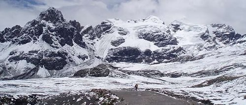

Valle del Pastoruri
En Ancash, los impresionantes picos nevados son uno de los principales atractivos que atraen día tras día a un importante número de turistas a la región; uno de estos nevados es el Pastoruri, una montaña que se encuentra dentro del circuito que comprende el Parque Nacional Huascarán y que ocupa parte del territorio del distrito de Catac.
La cumbre nevada del Pastoruri se eleva sobre los 5, 240 metros sobre el nivel del mar. Se conoce, que a causa de los cambios climáticos, este nevado de Ancash se ha visto notoriamente afectado, de tal manera, que gran parte de aquel ya no se encuentra cubierta por esa blanquecina nieve que antes lo caracterizaba.
Pese a lo anterior, el Nevado Pastoruri sigue siendo visitado por turistas interesados en escalar sus paredes, mismas que no tienen un alto nivel de dificultad, motivo por el cual es recomendada para quienes se inician en el deporte, o para quienes cuenten con menos experiencia.
Las escasas zonas de nieve que todavía presenta el Nevado Pastoruri, también hacen de aquella montaña un lugar interesante para visitar si se tiene inclinación por otros deportes de aventura relacionados al hielo, tal es el caso del esquí en nieve, del mismo modo, se puede practicar el trekking en hielo y el campismo.
Debido a los conflictos que ha traído el cambio climático para este nevado, es que la población de Catac con apoyo de las autoridades respectivas, han iniciado un proyecto que tiene como objetivo contrarrestar los problemas que el fenómeno ha causado en este recurso turístico de la región; el proyecto tiene por nombre “La Ruta del Cambio Climático”, y permite al visitante observar el proceso de descongelamiento del glaciar, lo que deriva en la formación paralela de una laguna; el proyecto presenta dos rutas que permiten observar con claridad este proceso, mismas que han podido ser creadas gracias a la facilidad de acceso y ascensión que presenta esta montaña ancashina.
Para que el visitante pueda llegar al Nevado Pastoruri, debe acceder al Parque Nacional Huascarán a través de la comunidad de Catac, a cuyas autoridades debe realizar un pago por boleto de ingreso; el pago puede venir incluido también en tours autorizados que permitan además conocer la mencionada “Ruta del Cambio Climático”.
Para llegar a este nevado, se debe dirigir primero al distrito de Catac, que dista 40 Km de Huaraz, y al cual se puede acceder gracias al servicio de buses turísticos o en algún auto propio que lo deje en el estacionamiento del nevado, mismo que se sitúa a medio kilómetro de la base de la montaña. Desde el estacionamiento, solamente resta caminar por aproximadamente media hora hasta el nevado, también se puede optar por alquilar el servicio de caballos. Ya en el nevado, todavía existen paredes que pueden ser escaladas, el tiempo estimado para tal objetivo es de 2 horas.
Se recomienda que las visitas al Nevado Pastoruri se den entre los meses de enero a diciembre. Hay que tener presente, que la temperatura del lugar puede descender hasta los -2°C |